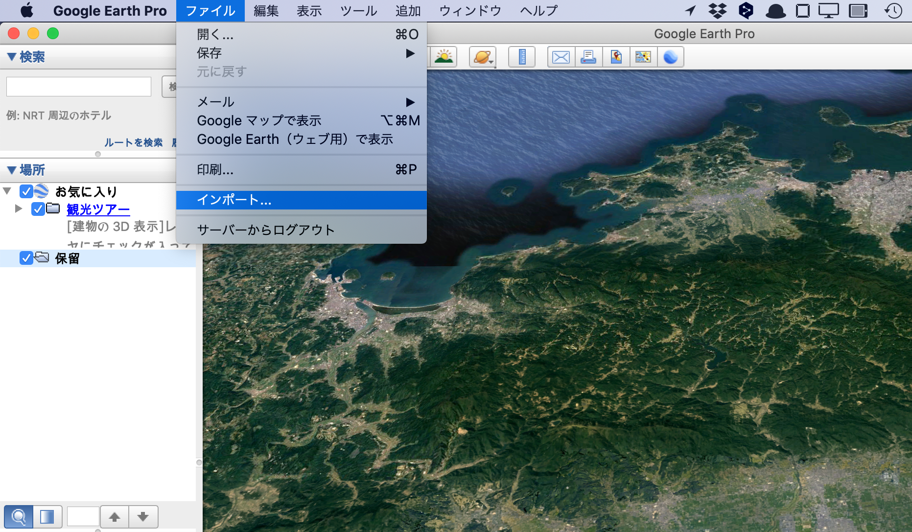
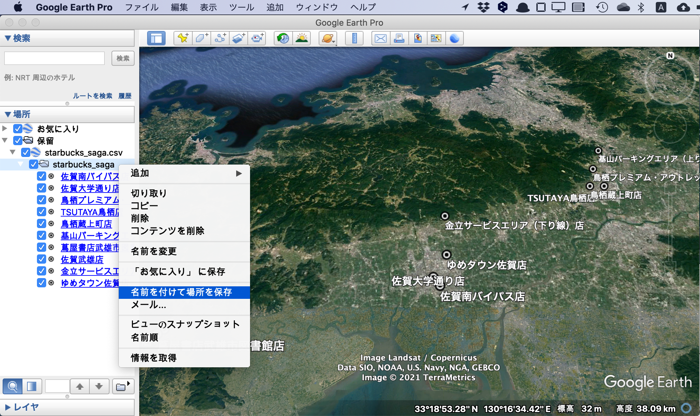
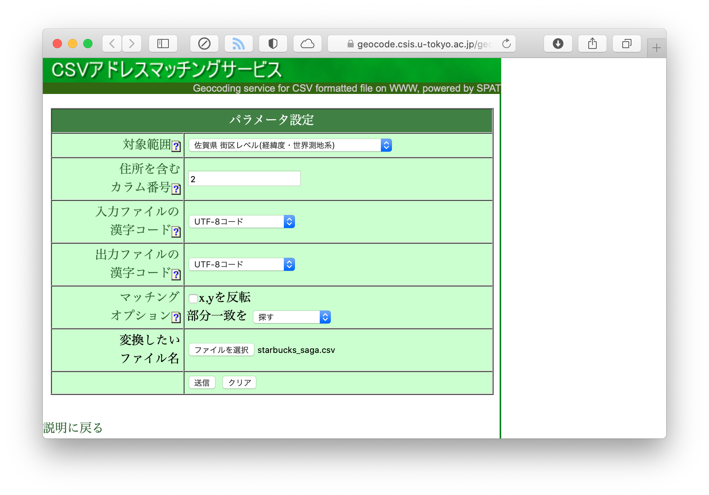
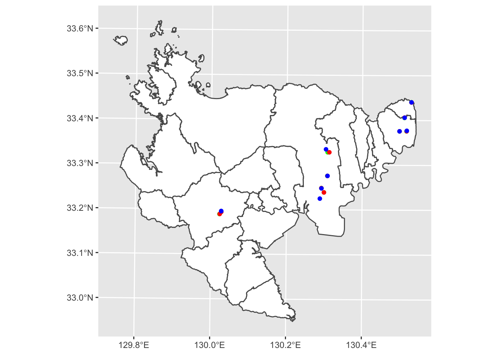

5 ジオコーディング
5.1 概要
ジオコーディング（geocoding）とは，住所を地理的座標（すなわち緯度と経度）に変換することです。
Rのみでジオコーディングを行うことは難しいので，
ここでは，外部のサーピスやアプリを使ってジオコーディングを行ういくつかの方法を解説します。
その結果をRに読み込み，GISデータとして分析に使用することを想定しています。
本章で紹介する外部サービスは，
- Google Earth Pro
- Yahoo!ジオコーダAPI
- CSVアドレスマッチングサービス（東京大学）
の3つです。
5.2 データ
佐賀県内のスターバックス店舗の住所一覧を，公式ウェブサイトから作成しました。CSVファイルをこちらからダウンロードすることもできます。
| shop | address |
|---|---|
| 佐賀南バイパス店 | 佐賀県佐賀市本庄町袋306-6 |
| 佐賀大学通り店 | 佐賀県佐賀市与賀町70-1 |
| 鳥栖プレミアム・アウトレット店 | 佐賀県鳥栖市弥生が丘8-1 |
| TSUTAYA鳥栖店 | 佐賀県鳥栖市本鳥栖町537-1 |
| 鳥栖蔵上町店 | 佐賀県鳥栖市蔵上町662-5 |
| 基山パーキングエリア（上り線）店 | 佐賀県三養基郡基山町小倉2097-1 |
| 蔦屋書店武雄市図書館店 | 佐賀県武雄市武雄町武雄5304-1 |
| 佐賀武雄店 | 佐賀県武雄市武雄町昭和277 |
| 金立サービスエリア（下り線）店 | 佐賀県佐賀市金立町金立1197-57 |
| ゆめタウン佐賀店 | 佐賀県佐賀市兵庫北5-14-1 |
5.3 Google Earth Pro
こちらから，Google Earth Pro をダウンロード，インストールしてください。
Google Earth を起動しまし，「ファイル」→「インポート…」から，starbucks_saga.csvを読み込みます。

「ファイルのインポート ウィザード」ウィンドウが開きますので，指示に従って，入力ファイルの情報を設定します。
設定が完了すると，データ読み込まれ，画面左の「場所」パネルにstarbucks_sagaと表示され，地図上にスターバックス店舗の位置がプロットされると思います。
次に，このstarbucks_sagaを右クリックし，「名前を付けて場所を保存」を選択します。
そして，ファイルを「Kml」形式で保存します。
ここではstarbucks_saga.kmlという名前で，dataフォルダに保存しておきましょう。

ここからは，Rでの作業です。
作成したKmlファイルを，st_read関数で読み込みます。
starbucks_ge <- st_read("data/starbucks_saga.kml")## Reading layer `starbucks_saga' from data source
## `/Users/kazukitamura/github/giswithr/data/starbucks_saga.kml'
## using driver `KML'
## Simple feature collection with 10 features and 2 fields
## Geometry type: POINT
## Dimension: XYZ
## Bounding box: xmin: 130.0229 ymin: 33.1888 xmax: 130.5296 ymax: 33.4408
## z_range: zmin: 0 zmax: 0
## Geodetic CRS: WGS 84head(starbucks_ge, 3)## Simple feature collection with 3 features and 2 fields
## Geometry type: POINT
## Dimension: XYZ
## Bounding box: xmin: 130.2921 ymin: 33.23883 xmax: 130.5114 ymax: 33.40581
## z_range: zmin: 0 zmax: 0
## Geodetic CRS: WGS 84
## Name Description geometry
## 1 佐賀南バイパス店 POINT Z (130.2989 33.23883 0)
## 2 佐賀大学通り店 POINT Z (130.2921 33.24846 0)
## 3 鳥栖プレミアム・アウトレット店 POINT Z (130.5114 33.40581 0)geometryが3次元になっていますので，気になるようでしたら，st_zm関数でZ次元を落としておいても良いと思います。
starbucks_ge <- st_zm(starbucks_ge)
head(starbucks_ge, 3)## Simple feature collection with 3 features and 2 fields
## Geometry type: POINT
## Dimension: XY
## Bounding box: xmin: 130.2921 ymin: 33.23883 xmax: 130.5114 ymax: 33.40581
## Geodetic CRS: WGS 84
## Name Description geometry
## 1 佐賀南バイパス店 POINT (130.2989 33.23883)
## 2 佐賀大学通り店 POINT (130.2921 33.24846)
## 3 鳥栖プレミアム・アウトレット店 POINT (130.5114 33.40581)5.4 Yahoo!ジオコーダAPI
Yahoo Japanが提供しているAPIを使ってジオコーディングを行います。 Yahoo! JAPAN IDを持っていない人は取得してください。
Yahoo Japanにログインし，こちらからアプリケーションを登録し、アプリケーションIDを発行してください（アプリケーションの種類は「クライアントサイド」にしてください）。
アプリケーションIDの管理には，keyringパッケージが便利です。
Windowsなら資格情報マネージャー，macosならKeychainを利用してIDやパスワードを管理することができます。
key_set関数を実行すると，パスワード入力欄が表示されますので，先ほど取得したアプリケーションIDを入力します。
library(keyring)
# key_set("yahoo_api")まず，starbucks_saga.csvを読み込みましょう。
starbucks <- read_csv("data/starbucks_saga.csv")##
## ─ Column specification ────────────────────────────
## cols(
## shop = col_character(),
## address = col_character()
## )RからwebAPIを操作するには，httrパッケージが便利です。
geocoidngという関数を定義しました。
library(httr)
geocoding <- function(address){
tmp <- GET(url = "https://map.yahooapis.jp/geocode/V1/geoCoder?",
query = list(
appid = keyring::key_get("yahoo_api"),
query = address,
output = "json"
)
) # APIの結果を受け取る
tmp <- content(tmp)
tmp <- tmp$Feature[[1]]$Geometry$Coordinates # 緯度軽度の部分を抜き出す
tmp <- str_split_fixed(tmp, ",", 2)
tmp <- as_tibble(tmp)
tmp <- type_convert(tmp)
tmp <- set_names(tmp, c("lon", "lat"))
return(tmp)
}定義した関数を使って，ジオコーディングを行い，緯度軽度のデータを追加します。
lonlat <- map_df(starbucks$address, geocoding)## Warning: The `x` argument of `as_tibble.matrix()` must have unique column names if `.name_repair` is omitted as of tibble 2.0.0.
## Using compatibility `.name_repair`.starbucks_ya <- bind_cols(starbucks, lonlat)さらに，これをSimple Featureに変換します。
starbucks_ya <- st_as_sf(starbucks_ya, coords = c("lon", "lat"), crs = 6668)
head(starbucks_ya, 3)## Simple feature collection with 3 features and 2 fields
## Geometry type: POINT
## Dimension: XY
## Bounding box: xmin: 130.2921 ymin: 33.23876 xmax: 130.5116 ymax: 33.40649
## Geodetic CRS: JGD2011
## # A tibble: 3 x 3
## shop address geometry
## <chr> <chr> <POINT [°]>
## 1 佐賀南バイパス店 佐賀県佐賀市本庄町袋306-6 (130.2989 33.23876)
## 2 佐賀大学通り店 佐賀県佐賀市与賀町70-1 (130.2921 33.2483)
## 3 鳥栖プレミアム・アウトレット店 佐賀県鳥栖市弥生が丘8-1 (130.5116 33.40649)5.5 CSVアドレスマッチングサービス
これは，東京大学空間情報科学研究センターが提供するwebサービスで， 住所を含むcsvファイルに，緯度経度を追加して返してくれます （詳しくはこちら）。
こちらのページにアクセスし，必要な情報を入力します。

帰ってきたファイルを，starbucks_geocoding.csvと名前を変えて，dataフォルダに置きましょう。
このファイルをRで読み込み，あとは先ほどと同様にSimple Feature変換すれば作業終了です。
starbucks_ut <- read_csv("data/starbucks_geocoding.csv")##
## ─ Column specification ────────────────────────────
## cols(
## shop = col_character(),
## address = col_character(),
## LocName = col_character(),
## fX = col_double(),
## fY = col_double(),
## iConf = col_double(),
## iLvl = col_double()
## )starbucks_ut <- st_as_sf(starbucks_ut, coords = c("fX", "fY"), crs = 6668)
head(starbucks_ut, 3)## Simple feature collection with 3 features and 5 fields
## Geometry type: POINT
## Dimension: XY
## Bounding box: xmin: 130.2882 ymin: 33.2249 xmax: 130.5118 ymax: 33.40625
## Geodetic CRS: JGD2011
## # A tibble: 3 x 6
## shop address LocName iConf iLvl geometry
## <chr> <chr> <chr> <dbl> <dbl> <POINT [°]>
## 1 佐賀南バイパ… 佐賀県佐賀… 佐賀県/佐賀市/… 5 5 (130.2882 33.2249)
## 2 佐賀大学通り… 佐賀県佐賀… 佐賀県/佐賀市/… 5 5 (130.2923 33.24775)
## 3 鳥栖プレミア… 佐賀県鳥栖… 佐賀県/鳥栖市/… 5 7 (130.5118 33.40625)5.6 結果の図示
3通りの方法でジオコーディングした結果を全て地図に落としてみましょう。 概ね同じ位置にプロットされますが，店舗によっては利用するサービスによってジオコーディングされた座標がかなり異なるようです。 これまでの経験上，CSVアドレスマッチングサービスの精度は，他の2つと比較するとやや劣るように感じます。
ggplot() + geom_sf(data = map2, fill = "white") +
geom_sf(data = starbucks_ge, color = "green") +
geom_sf(data = starbucks_ya, color = "red") +
geom_sf(data = starbucks_ut, color = "blue")